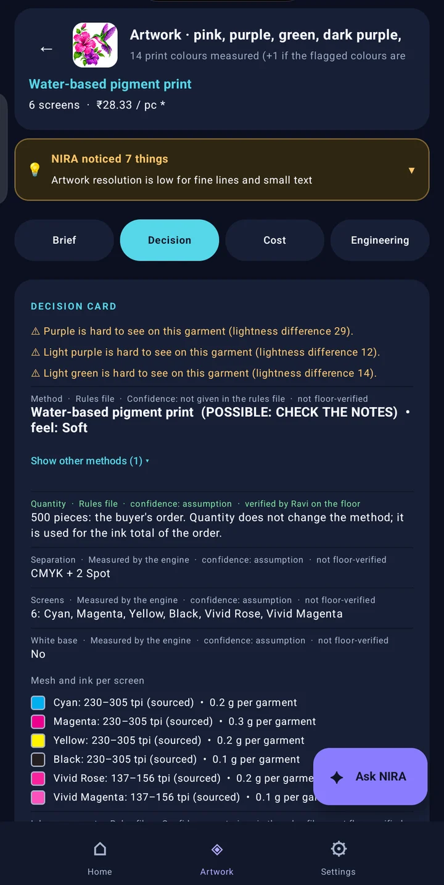
Decision card
Method, second choices, screens, white base and risks. Each line says where it came from, how sure it is, and whether the expert checked it on the floor.
Garment print engineering · Hybrid AI
NIRA measures garment artwork on the phone, a print expert's rules choose the method, screens, white base, ink and cost, and Gemini explains, answers and acts, on-device first. Every number the AI says is checked against the engine.
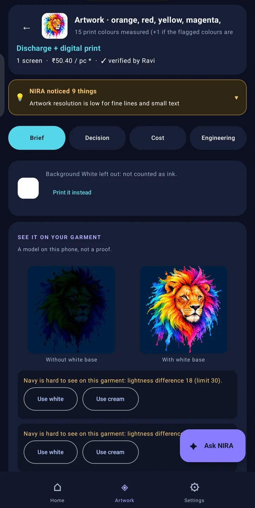
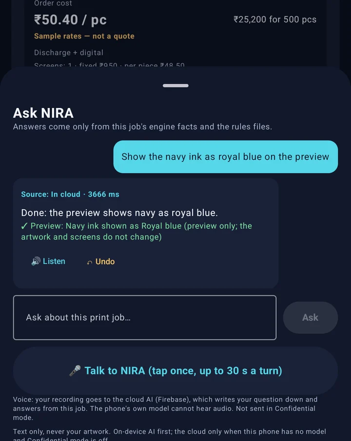
For judges
Made for people
Every print ends up on someone. NIRA helps the factory get it right the first time, so nobody guesses when the buyer is waiting.
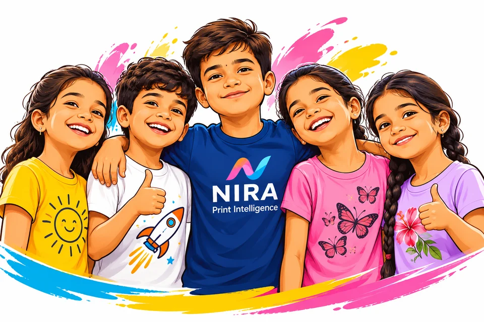
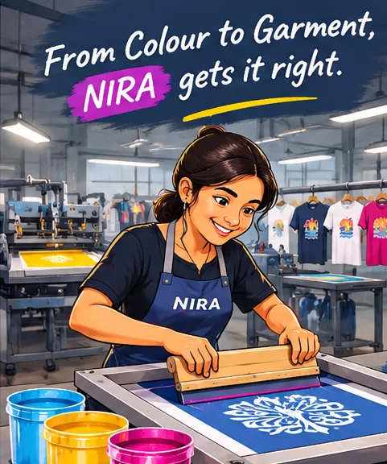
How it works
Photograph a garment or open the artwork. The engine finds the print colours, the print area, the screens and the ink. No AI.
Answer four questions: garment colour, fibre, quantity, feel. The expert's rules file picks the method and says how sure it is. No AI.
Factory rates turn screens and ink into a cost per piece, with Cost-Down options and front + back orders. No AI.
Gemini explains the card, answers questions by voice or text, reads the buyer's brief and translates the sheet. Every number checked.
The app

Method, second choices, screens, white base and risks. Each line says where it came from, how sure it is, and whether the expert checked it on the floor.
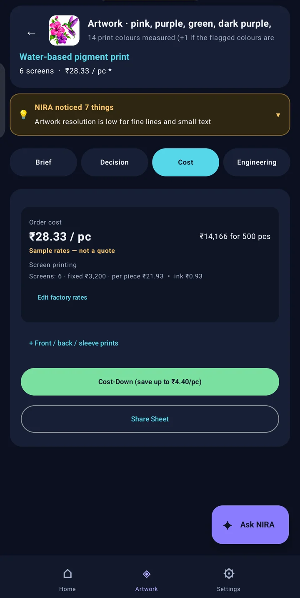
Cost per piece from the factory's own rates, in any currency. Cost-Down shows what merging colours or switching method saves, with a before and after preview.
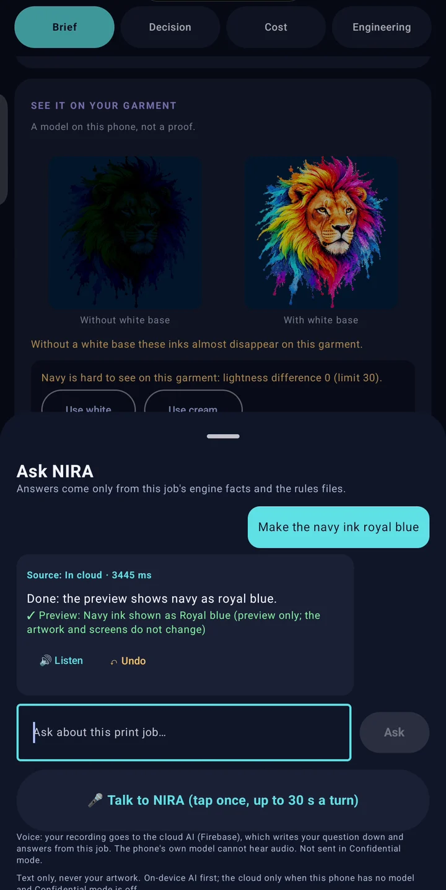
Ask by voice in Tamil or English. "Make the navy ink royal blue", "1000 pieces", "open the sheet in Spanish": NIRA does it, checks it, and offers Undo.

Start from an artwork file or a garment photo, ask about all your jobs, and see each job's method and cost at a glance.

Every AI request is listed: on this phone or in the cloud, how long it took, and whether NIRA's checks passed it or held it back.
Colour separation
Real engine output for a hummingbird artwork on a white cotton T-shirt: CMYK for the picture plus 2 solid colours, 6 screens.
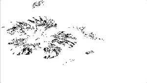
| Screen | Mesh | Coverage | Ink per garment |
|---|---|---|---|
| Cyan | 230–305 tpi | 15.9% | 0.2 g |
| Magenta | 230–305 tpi | 34.4% | 0.3 g |
| Yellow | 230–305 tpi | 19.4% | 0.2 g |
| Black | 230–305 tpi | 9.4% | 0.1 g |
| Pink (Vivid Rose) | 137–156 tpi | 9.9% | 0.2 g |
| Purple (Vivid Magenta) | 137–156 tpi | 7.7% | 0.1 g |
Mesh from the rules file; coverage and ink from the engine. A preliminary digital separation for planning, not print-ready films.
Phone and web
The Android app does the whole job: photo or artwork, engine, decision, cost, voice and the print sheet. On a laptop, this web page opens a real NIRA job in Chrome. Gemini explains it, answers questions about it and translates it, on the computer when Chrome's model is ready, otherwise in the cloud.
Real screenshots: this web page and the NIRA Android app.
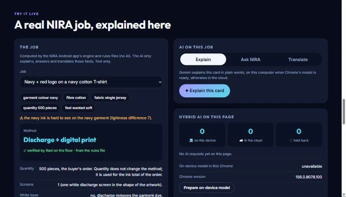
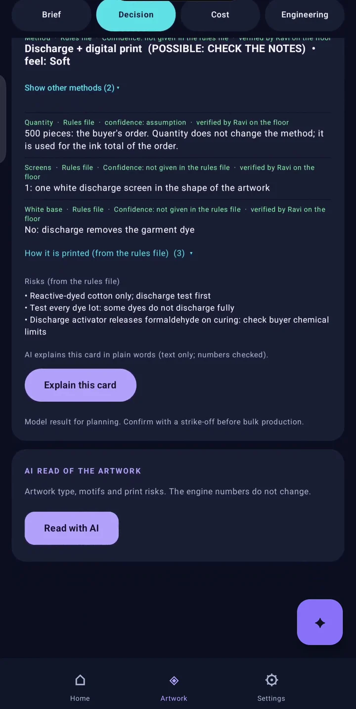
Hybrid AI
Decides · no AI
Explains and acts · AI
Try it live
Computed by the NIRA Android app's engine and rules files (no AI). The AI only explains, answers and translates these facts. Text only.
Active job: Navy + red logo on a navy cotton T-shirt
Gemini explains the card in plain words, on this computer when Chrome's model is ready, otherwise in the cloud.
Answers come only from this job's facts; a number that is not in the facts or your question is held back.
For the buyer or the floor. A line is used only if every number stays the same; otherwise it stays in English.
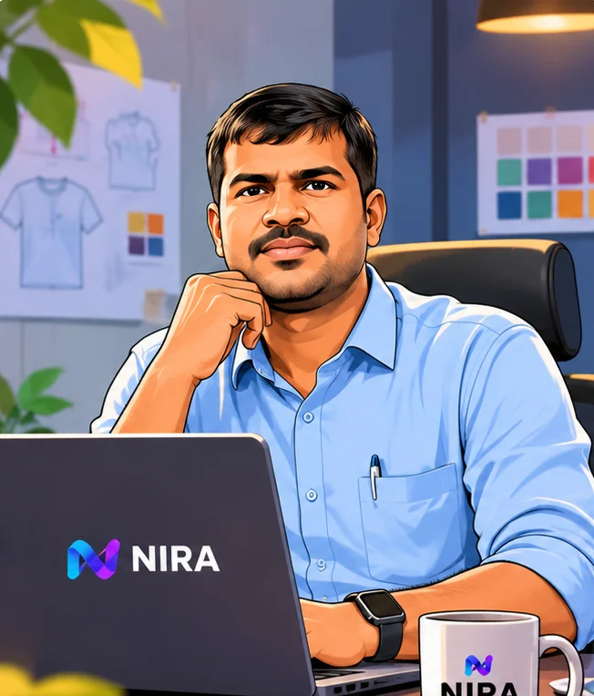
Built by a print expert
NIRA is built by S Ravi Shankar, a garment and print specialist. The methods, limits and strike-off rules in NIRA's rules files are his, written from floor experience. Where a rule has been checked on the floor, the app says "verified by Ravi". Where it has not, it says so.
The AI never makes these values. It explains them, answers questions about them and translates them.
Privacy
Honest limits
Questions
No. NIRA's engine measures the artwork and a print expert's rules file chooses the method. The AI explains the decision, answers questions about it and carries out requests from a fixed list. It never invents a method, price or ink figure.
The answer is not shown. Code compares every number in the answer with the engine's facts and the user's own question; anything else is held back with the reason, and it is counted on the AI activity list.
See What leaves the phone, and when. The source shown on every answer is the one the Firebase SDK reports.
Only after you tap Send once, and never in Confidential mode. The full list: What leaves the phone, and when.
From two rules files written with a garment print expert (mesh, ink, white base, discharge, quantity, cost-down, strike-off limits). Values not yet checked on the floor are marked as such. A strike-off is always needed before bulk production.
The Android judge app link is in the Devpost testing instructions. It needs Android 8.0 or later and installs beside any other app.
Measure, decide, cost and share, with AI you can check.
Try a real jobOne free prompt through Firebase AI Logic in any inference mode, for checking the routing.